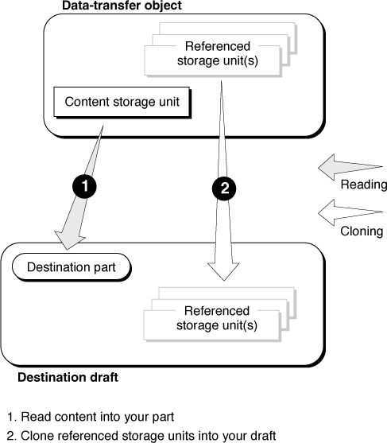
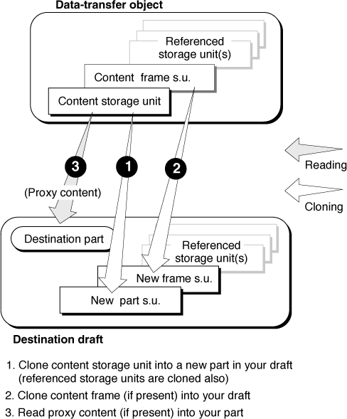
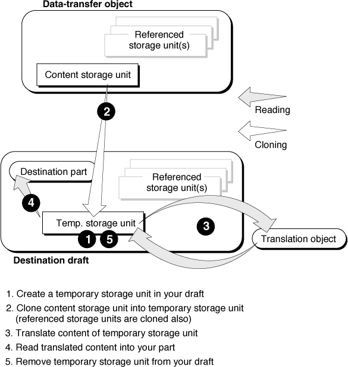
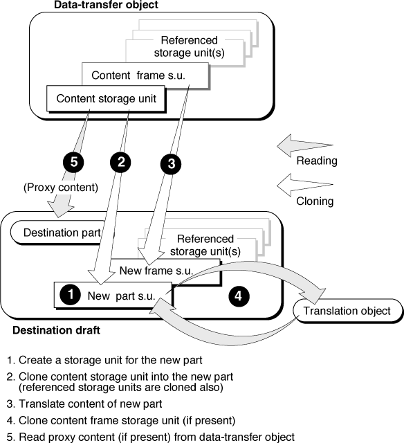

Reading From a Data-Transfer Object
You read from a data-transfer object when the user pastes or drops data into your part or when you create or update the destination of a link. This section discusses how to extract that data from the data-transfer object.When you place transferred data into your part, what you do with the data depends on how the part kinds of the transferred data relate to the part kind of your part (the destination part).
Incorporating Intrinsic Content
As the destination of a data transfer, your part incorporates the intrinsic content of the data-transfer object into your own part's intrinsic content (and embeds whatever embedded parts the transferred content contains) if all of these conditions apply:When incorporating transferred data, you should read the highest-fidelity part kind possible--that is, the first value (in storage order) that your part editor understands. If the transferred data includes a
- The intrinsic content of the transferred data is stored in at least one part kind that you can incorporate into your part.
- The user has not specified Embed As in the Paste As dialog box.
- The data-transfer object's content storage unit does not contain a property named
kODPropContentFrame. (If it does, the transferred data consists of a single embedded frame without surrounding intrinsic content, and the data should be embedded; see "Frame Shape or Frame Annotation".)kODPropPreferredKindproperty, however, it takes precedence over fidelity; you should attempt to read it first.Incorporating involves reading intrinsic content plus possibly cloning embedded frames, links, and other objects. Figure 8-6 summarizes the steps involved.
Figure 8-6 Incorporating the content of a data-transfer object

Here, in more detail, are the basic steps to take when incorporating:
- Gain access to the data-transfer object and prepare to read from it. (See, for example, the initial steps of "Pasting From the Clipboard".)
If you are incorporating translated data, you already will have cloned the data into a temporary storage unit in your draft, and you already will have translated it. Take these steps:
- In the kODPropContents property of that storage unit, focus on the value that corresponds to the translated part kind. Read the data into your part, following your own content model.
- Skip to step 5.
- Start the cloning operation, as described in "BeginClone".
- In the
kODPropContentsproperty of the data-transfer object's content storage unit, focus on the value that corresponds to the highest-fidelity part kind that you can incorporate into your part. (It may not be the highest-fidelity value present in the property.) Read the data into your part, following your own content model.As you encounter persistent references to objects--embedded frames, link-source objects, link objects, auxiliary storage units, and so on--clone each object into your draft by calling the
Clonemethod of the data-transfer object's draft (see "Clone"). Adjust your persistent references to point to the newly cloned objects. (Remember to retain the cloned object IDs for instantiation after cloning is complete, rather than reconstructing the objects yet.)- End the cloning operation, as described in "EndClone".
- If you are incorporating as a result of a drop, there may be a
kODPropMouseDownOffsetproperty in the data-transfer object's content storage unit. If so, focus on that property, read its value, and--if appropriate for your content model--use the value to position the incorporated data in relation to the drop location.(If you are incorporating translated data, you must read this property from the original data-transfer object, not the cloned storage unit.)
- If the cloning was successful, instantiate each cloned embedded frame (with your draft's
AcquireFramemethod) and call the frame'sSetContainingFramemethod, to make your part's display frame (the frame that received the data transfer) the containing frame of the new embedded frame.Create additional embedded frames as necessary, if your part's content model specifies that the new part is to appear in more than one of your display frames. If you do create new frames, synchronize them with the first (source) frame; see "Synchronizing Display Frames" for more information.
- Change each new frame's link status to reflect its current location. Link status is described in the section "Frame Link Status"kODNotInLink).
- If any of the objects that you have cloned into your part is a link-source object or link object, follow the procedures described in the section "Reading Linked Content From Storage" to make sure that the objects are valid.
- If any newly embedded frame is visible, assign a facet or facets to it, as described in the section "Adding a Facet".
- Perform any closing tasks specific to the kind of data-transfer object you are reading from. (See, for example, the final steps of "Pasting From the Clipboard".)
(If you are incorporating translated data, you can at this time remove the cloned temporary storage unit from your draft.)
Embedding a Single Part
As the destination of a data transfer, your part embeds the entire contents of the data-transfer object as a single part (plus whatever embedded parts it contains) if any of these conditions apply:Embedding data from a data-transfer object as a single part involves, basically, cloning the content storage unit into your draft and then providing a frame and facets for the new part. Figure 8-7 summarizes the steps involved.
- The intrinsic content is of a part kind that you cannot incorporate.
- The user has specified Embed As in the Paste As dialog box.
- The transferred data consists of a single embedded frame without surrounding intrinsic content (regardless of its part kind). In this case the data-transfer object's content storage unit contains a property named
kODPropContentFrame, which serves as a signal that the data consists of a single frame and should be embedded, even if it is of a part kind that you can incorporate. See "Frame Shape or Frame Annotation".Figure 8-7 Embedding the content of a data-transfer object

Here, in more detail, are the basic steps to take when embedding:
- Gain access to the data-transfer object and prepare to read from it. (See, for example, the initial steps of "Pasting From the Clipboard".)
If you are embedding translated data, you already will have cloned the data into a new storage unit in your draft, and you already will have translated it. Skip to step 6.
- Start the cloning operation, as described under "The Cloning Sequence".
- Clone the data-transfer object's content storage unit into a new storage unit in your draft, using the
Clonemethod of the data-transfer object's draft.- If there is a property named
kODPropContentFramein the original storage unit, read the storage-unit reference it contains and use that reference to clone the new part's frame from the data-transfer object's storage unit into your draft. (Cloning the data-transfer object's content storage unit alone does not copy the frame, because the reference is a weak persistent reference.)- End the cloning operation.
- If any of the following conditions apply, notify the embedded part's future part editor that it should use a specific part kind when reading the part:
- if the data has been translated
- if this embedding has occurred as a result of a user selection in the Paste As dialog box and the user has chosen a part kind that is not the preferred kind
- if a preferred kind property does not exist and the user has chosen a part kind that is not the highest-fidelity (first) value stored in the transferred storage unit's contents property
In any of these cases, create a property with the name
kODPropPreferredKindin the cloned storage unit (if the property does not already exist) and write into it a value that specifies the part kind the editor should use.- If this embedding has occurred as a result of a user selection in the Paste As dialog box and the user has chosen a specific part editor to edit the part, add a property with the name
kODPropPreferredEditorto the cloned storage unit, and write into it the editor ID (returned in theeditorfield of theODPasteAsResultstructure) of the preferred editor.- If the original storage unit contains a property with the name
kODPropProxyContents, that property contains any proxy content that the part's original containing part wanted associated with the frame, such as linking information or a drop shadow or other visual adornment. (This property is absent if the transferred data includes any intrinsic content in addition to the embedded frame.)Focus the original storage unit on the
kODPropProxyContentsproperty and read in the information from the data-transfer object (not from the cloned storage unit). You must understand the format of the proxy content in order to use it; it is subsumed in your own part's intrinsic content to be associated with the frame. If you don't understand the format, ignore the data.- If you are embedding as a result of a drop, there may be a property named
kODPropMouseDownOffsetin the content storage unit of the data-transfer object (not the cloned storage unit). If so, focus on that property, read its value, and--if appropriate for your content model--use the value to position the embedded data in relation to the drop location.- Recreate the new part's frame--if it has been provided in the
kODPropContentFrameproperty--using your draft'sAcquireFramemethod, and call itsSetContainingFramemethod to assign your part's display frame (the frame that received the data transfer) as the containing frame.If no frame was provided, you need to create one:
- Obtain the suggested frame shape--if it exists--from the data-transfer object (not from the cloned storage unit). It is in a property named
kODPropSuggestedFrameShape. If it is not there, use a default frame shape.- Instantiate the new part; pass the cloned storage unit's ID to your draft's
AcquirePartmethod.- Create the frame for the part, using your draft's
CreateFramemethod.- Change the link status of the new frame to reflect its current location. If your part does not support linking, you must nevertheless change your new embedded frame's link status (to
kODNotInLink).- If the newly embedded frame is visible, assign facets to it, as described in the section "Adding a Facet".
- Perform any closing tasks specific to the kind of data-transfer object you are reading from. (See, for example, the final steps of "Pasting From the Clipboard"
Translating Before Incorporating or Embedding
If you must translate transferred data before incorporating or embedding it in your part, follow the steps listed here before following those in the sections "Incorporating Intrinsic Content".Basically, you translate by first cloning the data into a storage unit in your own draft, then modifying it, and then completing the data transfer. When you translate transferred data, always write the translated data into a storage unit in your own draft; do not write it back into the original data-transfer object. Subsequent readers of the data cannot tell a translated value from a value written by the data's original part editor.
These are the general steps you might follow:
Complete the transfer of the translated data in either of two ways, depending on whether you are incorporating or embedding, and whether you are creating or updating a link.
- Gain access to the data-transfer object that contains the untranslated data and prepare to read from it. (See, for example, the initial steps of "Pasting From the Clipboard".)
(If you are creating a link, remember that you read the data from the newly created link object, not the clipboard or drag-and-drop object that contained the link specification.)
- Start the cloning operation, as described under "Cloning".
- Clone the data-transfer object's content storage unit into a new storage unit in your draft, using the
Clonemethod of the data-transfer object's draft.- If there is a property named
kODPropContentFramein the original storage unit, you should embed the data (unless the user explicitly specified incorporation in the Paste As dialog box). Read the storage-unit reference the property contains and use that reference to clone the new part's frame from the data-transfer object's draft into your draft. (Cloning the data-
transfer object's content storage unit alone does not copy the frame, because the reference is a weak persistent reference.)- Access the storage unit of the cloned-but-untranslated data, and focus on its contents property. Add a value whose value type is the part kind you are translating to.
- Create two storage-unit views: one focused on the original untranslated value, and the other focused on the translated value you have just created.
- Gain access to the translation object (by calling the session object's
GetTranslationmethod), and then call the translation object'sTranslateViewmethod, passing it the two storage-unit views. The translation object performs the translation and writes the new data into the new value.- Delete the storage-unit views.
Figure 8-8 Translating and then incorporating the contents of a data-transfer object
- If your part can directly read the part kind of the translated data (and if the user has not selected Embed As from the Paste As dialog box), incorporate it. Follow the steps in the section "Incorporating Intrinsic Content".
Figure 8-8 summarizes the steps involved. As the figure shows, you read the content into your part from the cloned temporary storage unit, not the original data-transfer object, and you remove the temporary storage unit from your draft when the transfer is complete.

Figure 8-9 Translating and then embedding the contents of a data-transfer object
- If your part cannot directly read the part kind of the translated data (or if the user has selected Embed As from the Paste As dialog box), follow the instructions in the section "Embedding a Single Part".
Figure 8-9 summarizes the steps involved in this case. The cloned storage unit is not temporary, but becomes the new embedded part's storage unit. Note also that you must read proxy content from the original data-transfer storage unit, not the cloned one.
